Kotlin Coroutines by
Jim J. Moore is licensed under
a Creative Commons Attribution 4.0 International License.
Presentation source at https://github.com/jdigger/kotlin-coroutines-preso
Scaling Up to Kotlin Coroutines
Agenda
A little groundwork
Push/pull, async/concurrent, multitasking, etc.
Major Async Patterns
callbacks, functors, Promises, async/await, streams, queues, actors, reactive programming
Kotlin’s native implementations
coroutines vs threads, structured concurrency, suspension, async call styles, channels, actors, flows
A little background
Push/Pull
To take a simple piece of pseudo-code:
series_of_items.each { item -> print(item) }How does "item" get to the "print"?
Pull (a.k.a. Polling)
“Series, do you have another item? I’ll wait for your response.”
“You do? I’ll print what you yield to me.” Go back to step 1.
“You don’t? Ok, I’ll stop asking.”
for/while loops, iterators, etc. all work this way
As long as the “I’ll wait” part is at-or-effectively 0 time, that’s by far the simplest and most efficient approach
But what if you don’t know exactly when the next value (or the indicator to finish) will come?
Push (a.k.a. Events)
“Series, call me any time you have something new for me.” Goes off to do other work.
“You’ve emitted something? I’ll print it.” When finished goes off to do other work.
“You’re telling me you’re done? I’ll do any resource cleanup.”
Event buffers, messaging queues, etc. all work this way
A lot more “machinery” is needed for handling events as well as complexities in reasoning about what’s happening.
But now the timing of things is no longer an issue.
Async vs Concurrent
- Asynchronous
Perform an operation, but don’t wait for the result
- Concurrent
Deal with multiple tasks at the same time
| There are important differences between “concurrent” and “parallel”, but this is good enough for now |
How do we get Concurrency?
Any time you have a shared resource (CPU, memory, etc) you have to figure out how to do orderly hand-offs
Cooperative Task-Switching vs Preemptive Multitasking
Cooperative Task-Switching
Shares resources and is a “good citizen” about yielding control occasionally for others
Preemptive Multitasking
A central process enforces “fairness”
Cooperative Task-Switching
Extremely efficient & predictable
A “bad citizen” that doesn’t yield quickly enough causes resource starvation
Preemptive Multitasking
Makes sure everyone gets an “equal” slice of time
Much more likely to cause shared-resource contention, requiring more mutexes/semaphores, complex re-entrant locks, etc.
Adds a lot of complexity and affects performance
UI Event Queues


ALL UIs are single-threaded. No matter how many cores you have. Always have been. (Even single-core machines.)
But surely servers must be multithreaded, right?
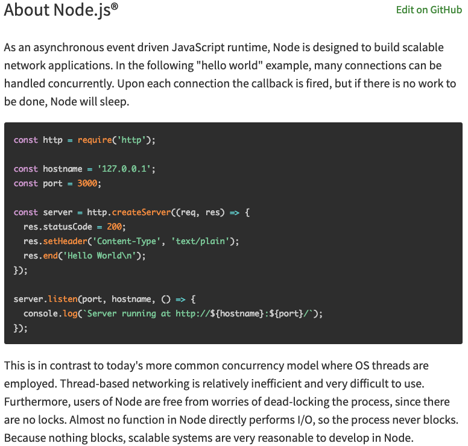
By restricting extremely performance sensitive things (e.g. painting the UI, or accepting network requests) to a single thread of (synchronous) execution that merely dispatches asynchronously, you can make a lot of simplifying assumptions
Event Queue Process
Pick up the next event on the queue
Identify event
Figure out where to send it
Send it to the appropriate place
repeat
Major Async Patterns
Example Async Callback
const server = http.createServer((req, res) => {
res.statusCode = 200;
res.setHeader('Content-Type', 'text/plain');
res.end('Hello World\n');
});
server.listen(port, hostname, () => {
console.log(`Server running at http://${hostname}:${port}/`);
});
console.log('Server starting');The main thread of execution doesn’t wait for the server to start
Event Queue
The network connection process doesn’t actually handle the request or wait for the response: it packages up the request, creates a place to put a response, and passes those off to another process.
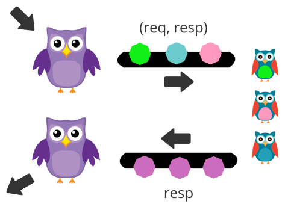
ALL asynchronous code is based on callbacks
But they are too primitive to reason about for non-trivial uses
Callback Hell
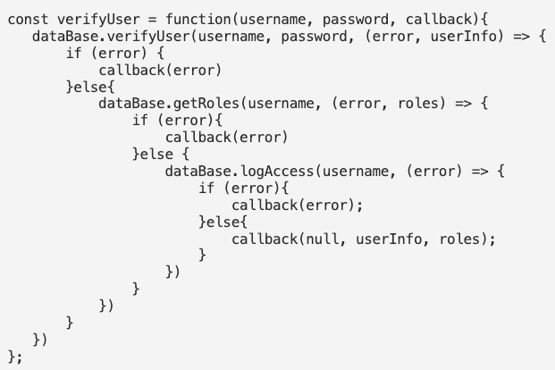
Callback Hell
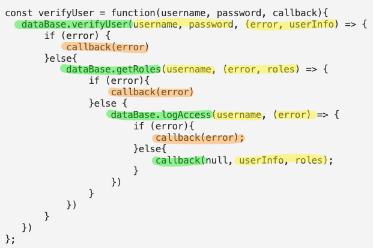
Functors
In category theory, a “functor” is a map between categories.
In computer science, it’s effectively a function that contains a value that can be mapped to a function of another value.
A simple example is Java’s Optional
Optional.of("something")
.map(item -> item + " else")
.ifPresent(System.out::println);It’s actually a special kind of Functor called a Monoid, but…
If you have a functor you just know that you can perform a transformation on what it contains.
What’s really important to realize is that you don’t know/care how OR WHEN that value is populated.
Promises, Promises…
Javascript added “Promises” to have a value
promiseToEventuallyHaveValue
.then((retrievedValue) => { doSomething(retrievedValue) })
.catch((err) => { handleError(err) })Conceptual Promise
/**
* A simple implementation of {@link Promise}.
*
* Does not provide any concurrency support, but shows how the other aspects
* of how a Promise works.
*/
class ConceptualPromise {
/**
* @param {executorCallback} executor - handler for when this receives a value
*/
constructor(executor) {
// no concurrency, but support the Promise "flow"
executor(
(resolveValue) => {
this.resolvedValue = resolveValue
},
(rejectedValue) => {
this.rejectedValue = rejectedValue
}
);
}
/**
* If this contains a value, pass it to the given handler.
*
* @param {thenCallback} callback - handler for the passed value
* @returns {ConceptualPromise}
*/
then(callback) {
if (this.rejectedValue !== undefined) {
return ConceptualPromise.rejected(this.rejectedValue)
} else {
return new ConceptualPromise((resolve, reject) => {
try {
resolve(callback(this.resolvedValue))
} catch (e) {
reject(e)
}
})
}
}
/**
* If this contains a rejection, invokes the provided callback.
*
* @param {catchCallback} callback - error handler
* @returns {ConceptualPromise}
*/
catch(callback) {
if (this.rejectedValue !== undefined) {
const reason = callback(this.rejectedValue) || this.rejectedValue;
return ConceptualPromise.rejected(reason);
} else {
return ConceptualPromise.resolved(this.resolvedValue);
}
}
// *********************************
//
// STATIC METHODS
//
// *********************************
/**
* Create a ConceptualPromise that contains the given value.
*
* @param {*} resolvedValue - the value to resolve to
* @returns {ConceptualPromise}
*/
static resolved(resolvedValue) {
return (resolvedValue instanceof ConceptualPromise) ?
resolvedValue :
new ConceptualPromise((resolve, reject) => {
resolve(resolvedValue)
});
}
/**
* Create a ConceptualPromise that is in a rejected state.
*
* @param {*} reason - the reason the for rejection
* @returns {ConceptualPromise}
*/
static rejected(reason) {
return (reason instanceof ConceptualPromise) ?
reason :
new ConceptualPromise((resolve, reject) => {
reject(reason)
});
}
}Converting Callbacks to Promises
/**
* Adapter function to translate the Node callback API for creating a Server into a Promise.
*
* @returns {Promise<Server>}
*/
function createServerPromise() {
return new Promise((resolve, reject) => {
const server = http.createServer((req, res) => {
res.statusCode = 200;
res.setHeader('Content-Type', 'text/plain');
res.end('Hello World\n');
});
resolve(server);
});
}
/**
* Adapter function to translate the Node callback API for create a connection listener for the Server into a Promise.
*
* @param {Server} server - the Server instance to create the connection listener for
* @param {number} port - the port to create the connection listener on
* @param {string} hostname - the hostname for the connection listener
* @returns {Promise<{server, port, hostname}>}
*/
function createServerListenerPromise(server, port, hostname) {
return new Promise((resolve, reject) => {
server.listen(port, hostname, () => {
resolve({server, port, hostname})
})
})
}Promise for the Node server example
/**
* Create and start an HTTP server on port 8089 using Promises.
*
* @returns {Promise<void>}
*/
function startPromiseServer() {
return createServerPromise()
.then((server) => {
return createServerListenerPromise(server, 8089, 'localhost')
})
.then(({port, hostname}) => {
console.log(`PromiseServer running at http://${hostname}:${port}/`);
});
}Each .then() block is the code yielding control until the value is available
Quick tangent:
Java’s equivalent is CompletableFuture
However it’s not “pure”, providing a BLOCKING get() method.
Question: Why is it “okay” for there to be a blocking get() method on the JVM, but not in Node/Chrome?
It’ll have significant implications later…
Back to Promises…
They make it cleaner than a bunch of callbacks, but it’s still awkward…
Let’s use some syntax sugar: async/await
Async/Await Server
/**
* Create and start an HTTP server on port 8090 using async/await.
*
* @returns {Promise<void>}
*/
async function startAsyncAwaitServer() {
const server = await createServerPromise();
const {port, hostname} = await createServerListenerPromise(server, 8090, 'localhost');
console.log(`AsyncAwaitServer running at http://${hostname}:${port}/`);
}Functionally, this is identical to the prior Promise-based function
The transpiler converts this to essentially the same code as before.
It uses the await keyword as a “hint” to know what chunks of code to lift out and move into .then() blocks.
/**
* Create and start an HTTP server on port 8090 using async/await.
*
* @returns {Promise<void>}
*/
async function startAsyncAwaitServer() {
const server = await createServerPromise();
const {port, hostname} = await createServerListenerPromise(server, 8090, 'localhost');
console.log(`AsyncAwaitServer running at http://${hostname}:${port}/`);
}While the code “feels” like you’re blocking waiting for the server and {port, hostname} to be returned, it’s not
/**
* Create and start an HTTP server on port 8090 using async/await.
*
* @returns {Promise<void>}
*/
async function startAsyncAwaitServer() {
const server = await createServerPromise();
const {port, hostname} = await createServerListenerPromise(server, 8090, 'localhost');
console.log(`AsyncAwaitServer running at http://${hostname}:${port}/`);
}The only way you’re allowed to use await is in an async function.
One of the primary things async does is force the function to return a Promise so the whole thing is forced to be
asynchronous…
Values Container
A Promise or CompletableFuture is good when you need exactly one value, but what about 0? Or “n” values?
That’s where you move from Functors to Monads
Effectively, a Functor means you have an entity with a map { .. } operation
["a", "functional", "world"].map { it.length }
==>
[1, 10, 5](…or "transform" or "then" or "collect" or… But
the most common name coming out of functional programming is "map")
A Monad means you can also have the flatten operation, where:
[[], ["a"], [], ["functional", "world"], []].flatten()
==>
["a", "functional", "world"]"flatten" is almost always used following a "map". So much so that essentially everyone just combines them into "flatMap"
/**
* Applies the transformer to every element in the collection, then flattens the result.
*/
fun Collection<T>.flatMap(transformer: (T) -> Collection<R>): Collection<R>of course Functors and Monads have more formal definitions, but this is good enough for now
Monad Implications
Since you now have a way of taking any (monadic-) collection and apply transformations that can also change the size of that result, you can filter, expand, etc.
Monad Implications
And since don’t know/care how it’s populated (since it’s also a Functor), it can be happening concurrently, at some point in the future, coming from an infinite sequence, …
Java Streams
Stream.of(2, 3, 4, 7, 9)
.filter(i -> i % 2 == 0)
.map(i -> i * 3)
.findFirst()
.ifPresent(i -> System.out.println("First filtered and mapped number: " + i));
// First filtered and mapped number: 6While you can use parallel() to get some parallelism, Java Streams are pull-based and rely on the source
synchronously yielding a new value |
Let’s Revist The Humble “Queue”…
in-memory FIFO data-structures like a “deque”
dropping files into a filesystem, or rows in a table
distributed queues, from MQ-Series to Kafka
…
Actors
The original principles were developed for Erlang and has received its modern popularity primarily with Akka
What Is An Actor?
It’s a “thing” that can only be communicated with via a “mailbox” (a.k.a. queue) and shares no state (but can have its own private state)
What that means is that it can run in its own thread/process
Since there’s no shared state*, it’s literally impossible for there to be issues like deadlocks, race conditions, etc.
(*) Besides enqueueing/dequeueing, but synchronizing that was perfected long ago
Therefore it’s trivial to be “infinitely” distributable: in-process or across the network
Formal Properties of Actors
Designate what to do with the next message
Send messages to other actors
Create more actors
What To Do With Next Message
This essentially means it can keep private state.
Counters, reducers (a-la map-reduce), etc.
Send Messages To Other Actors
Since it doesn’t share state, the only way for information to leave the Actor* is by messaging
(*) Things like a file, databases, etc. are considered “private state” as long as the Actor is the only thing that can mutate it
Create More Actors
Would a different Actor be better at handling this message? Create it.
Too much work for this Actor? Make more where the resources aren’t so constrained.
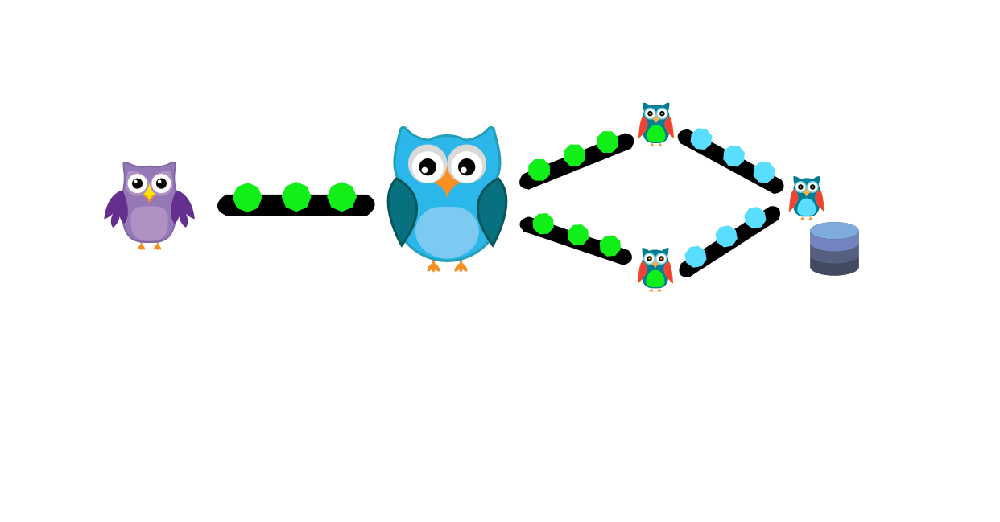
Reactive Programming
Reactive Programming (RP) takes the “observable” pattern with callbacks, pushes that into working on a stream of events, and leverages Functional Programming’s (FP) monads for processing
RP’s Sweet Spot
The primary focus is processing streams of events
The major libraries provide particular support for merging and splitting streams, sampling, buffering, etc
Hot vs Cold Streams
Cold: Words from a book. Nothing happens until it’s read
Hot: Readings from a thermostat. Throws out values regardless of there being an observer
as of 1.3
Created by JetBrains
Compiles to JVM/Android, JS, native
Crash-Course
(Most) Everything is an expression
fun something(aParam: String): String {
return aParam + " is nice"
}
// exactly the same as
fun something(aParam: String) = aParam + " is nice"Extension Functions
fun String.makeNice() = this + " is nice"
"Music".makeNice()
// exactly the same as
fun makeNice(str: String) = str + " is nice"
makeNice("Music")Pushing Threads
Quick “Bootstrap” Code for Example
fun processLauncher(max: Int, launcher: (Int) -> Unit) {
val start = Instant.now()
println("START [${Thread.currentThread().name}] - ${Thread.activeCount()} active")
launcher(max)
val end = Instant.now()
println("END Duration: " + Duration.between(start, end).toMillis())
}Scaling Threads
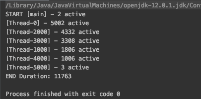
fun thread_scaling(max: Int) {
val threads = mutableListOf<Thread>()
for (i in 0..max) {
val thread = Thread {
Thread.sleep(10_000L) //simulate waiting 10s for a remote call
if (i % 1_000 == 0) {
println("[${Thread.currentThread().name}] - ${Thread.activeCount()} active")
}
}
threads.add(thread)
thread.start()
}
// make sure every thread has finished before returning
threads.forEach { thread -> thread.join() }
}
fun main() {
processLauncher(5_000) { thread_scaling(it) }
}Scaling Threads
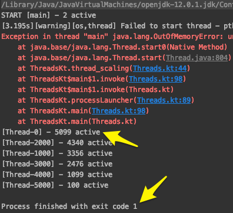
fun thread_scaling(max: Int) {
val threads = mutableListOf<Thread>()
for (i in 0..max) {
val thread = Thread {
Thread.sleep(10_000L) //simulate waiting 10s for a remote call
if (i % 1_000 == 0) {
println("[${Thread.currentThread().name}] - ${Thread.activeCount()} active")
}
}
threads.add(thread)
thread.start()
}
threads.forEach { thread -> thread.join() } // make sure every thread has finished before returning
}
fun main() {
processLauncher(6_000) { thread_scaling(it) }
}Scaling Coroutines
fun coroutine_main_scaling(max: Int) {
runBlocking {
for (i in 0..max) {
launch {
delay(10_000L) //simulate waiting 10s for a remote call
if (i % 1_000 == 0) {
println("[${Thread.currentThread().name}] - ${Thread.activeCount()} active")
}
}
}
}
}
fun main() {
processLauncher(5_000) { coroutine_main_scaling(it) }
}The runBlocking provides “scoped concurrency” so the .join() calls aren’t needed, launch does
a “fire and forget” essentially like the creation and start of the threads, and delay does the obvious
Scaling Coroutines
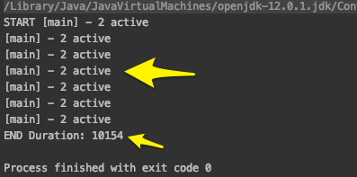
fun coroutine_main_scaling(max: Int) {
runBlocking {
for (i in 0..max) {
launch {
delay(10_000L) //simulate waiting 10s for a remote call
if (i % 1_000 == 0) {
println("[${Thread.currentThread().name}] - ${Thread.activeCount()} active")
}
}
}
}
}
fun main() {
processLauncher(5_000) { coroutine_main_scaling(it) }
}Scaling Coroutines
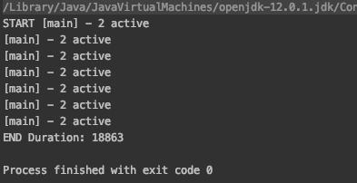
fun coroutine_main_scaling(max: Int) {
runBlocking {
for (i in 0..max) {
launch {
delay(10_000L) //simulate waiting 10s for a remote call
if (i % 1_000_000 == 0) {
println("[${Thread.currentThread().name}] - ${Thread.activeCount()} active")
}
}
}
}
}
fun main() {
processLauncher(5_000_000) { coroutine_main_scaling(it) }
}Scaling Coroutines
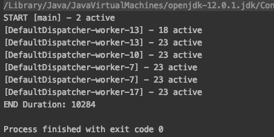
fun coroutine_IO_scaling(max: Int) {
runBlocking {
for (i in 0..max) {
launch(Dispatchers.IO) {
delay(10_000L) //simulate waiting 10s for a remote call
if (i % 1_000 == 0) {
println("[${Thread.currentThread().name}] - ${Thread.activeCount()} active")
}
}
}
}
}
fun main() {
processLauncher(5_000) { coroutine_IO_scaling(it) }
}Let’s dissect this a bit…
runBlocking { /* "this" is a new CoroutineScope */ }public fun <T> runBlocking(context: CoroutineContext = EmptyCoroutineContext,
block: suspend CoroutineScope.() -> T): T {
val currentThread = Thread.currentThread()
// ...Creates a new CoroutineScope attached to the current thread, and passes that as the "this" to the (no-arg) function
Acts as the “sync → async” barrier
CoroutineScope
Keeps track of any child scopes
All coroutines must be created in the context of a CoroutineScope
Waits for all child scopes to complete before it completes
If you cancel the parent, all its children are cancelled
launch { /* "this" is a new CoroutineScope */ }public fun CoroutineScope.launch(
context: CoroutineContext = EmptyCoroutineContext,
start: CoroutineStart = CoroutineStart.DEFAULT,
block: suspend CoroutineScope.() -> Unit
): Job {Can only be called in the context of a
CoroutineScopeIf you don’t specify a context (e.g.
Dispatchers.IO) then it inherits the caller’s contextCreates a new child CoroutineScope and uses that as the “this” for the passed in function
Returns a
Jobthat is similar to a Thread reference (for.join(),.cancel(), etc)
delay(5_000)suspend fun delay(timeMillis: Long) {Yields control of the current execution until the time has passed
What’s with suspend?
That’s what marks a function as being a coroutine
It tells the compiler to “deconstruct” the code in the function along certain “seams”
Conceptually it happens in ways very similar to what happens for an async function in JavaScript
(though the implementation is significantly different)
Continuations
At the byte-code level the function signature is rewritten to pass a Continuation in and out, and at those potential suspension points in the function it aggressively yields control of the current process
OpenJDK has a proposal, Project Loom to add this kind of support explicitly to Java
This gives a “re-entrant” capability to the function
This provides an extremely light-weight way to not only “pause” the function, but to pass the state around to other threads
Comparision of Async Call Styles
// classic blocking
fun sendEmail(emailArgs: EmailArgs): EmailResult
// Node-ish callback; quickly turns into callback hell
fun sendEmail(emailArgs: EmailArgs, callback: (Throwable?, EmailResult?) -> Unit)
// Future/Promise; good convention is to use the *Async to remind caller to do the `await`
fun sendEmailAsync(emailArgs: EmailArgs): Deferred<EmailResult>
// Coroutine
suspend fun sendEmail(emailArgs: EmailArgs): EmailResultfun largerBusinessProcessAsync(): Deferred<Unit> = GlobalScope.async {
// a lot of code here, then somewhere inside
val emailResult = sendEmailAsync(emailArgs).await()
// something else goes on after that
}
suspend fun largerBusinessProcess() {
// a lot of code here, then somewhere inside
val emailResult = sendEmail(emailArgs)
// something else goes on after that
}What happens if you forget to call await()? |
| As much as possible, code calling asynchronous code should be async itself |
This uses GlobalScope for example simplicity. For real code that is almost certainly a BAD idea.
Kotlin “Cheats”
Functionally, there’s no real difference between calling a function with .await() and using a coroutine
But the Kotlin compiler does a lot of optimizations for the platform
In fact, .await() is implemented as a coroutine, and async leverages scoped-concurrency
Trivial Example of Good Use of Await
// simulate making 100 remote calls that take 1 sec each; total time is just over 1 sec
suspend fun spreadSum(): Int = coroutineScope {
val deferredCalls: List<Deferred<Int>> = (1..100).map {
async {
delay(1000) // remote service call
2
}
}
deferredCalls
.map { deferred -> deferred.await() }
.sum()
}Channels
interface SendChannel<T> {
suspend fun send(value: T)
fun close(cause: Throwable? = null): Boolean
// ...
}
interface ReceiveChannel<T> {
suspend fun receive(): T
operator fun iterator(): ChannelIterator<E>
fun cancel(cause: CancellationException? = null)
// ...
}
interface Channel<E> : SendChannel<E>, ReceiveChannel<E>Fibonacci
0,1,1,2,3,5,8,13,21,34,…
Classic FP Style Sequence
fun CoroutineScope.fibonacci(): ReceiveChannel<Int> = produce {
var x = 0
var y = 1
while (true) {
send(x)
val next = x + y
x = y
y = next
}
}
fun main() = runBlocking {
for (i in fibonacci().take(10)) {
println("fib: $i")
}
}Basic Go-Routine Style
suspend fun fibonacci(n: Int, channel: SendChannel<Int>) {
var x = 0
var y = 1
for (i in 0 until n) {
channel.send(x)
val next = x + y
x = y
y = next
}
channel.close()
}
fun main() = runBlocking {
val fsc = Channel<Int>() // akin to a Go Channel
launch { fibonacci(10, fsc) } // akin to a Go Routine
for (i in fsc) {
println("fib: $i")
}
}Selecting Among Multiple Channels
suspend fun fibonacci(c: SendChannel<Int>, quit: ReceiveChannel<Int>) {
var x = 0; var y = 1
whileSelect {
c.onSend(x) {
val next = x + y
x = y; y = next
true // continue while loop
}
quit.onReceive {
println("quit")
false // break while loop
}
}
}
fun main() = runBlocking {
val sfsc = Channel<Int>()
val quitChannel = Channel<Int>()
launch {
for (i in 0 until 10) {
println("fib: ${sfsc.receive()}")
}
quitChannel.send(0)
}
fibonacci(sfsc, quitChannel)
}Fanning Out
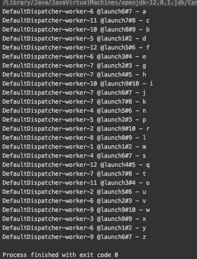
suspend fun sharing_a_channel() = coroutineScope {
val channel = Channel<String>()
for (i in 1..9)
launch(Dispatchers.Default + CoroutineName("launch$i")) {
for (str in channel) {
println("${Thread.currentThread().name} - $str")
}
}
for (letter in 'a'..'z') {
channel.send(letter.toString())
}
channel.close()
}Actors
sealed class CounterMsg
object IncCounter : CounterMsg() // one-way message to increment counter
class GetCounter(val response: CompletableDeferred<Int>) : CounterMsg() // a request with reply
fun main() = runBlocking {
val counterChannel: SendChannel<CounterMsg> = actor {
var counter = 0 // actor state
for (msg in this.channel) { // iterate over incoming messages
when (msg) {
is IncCounter -> counter++
is GetCounter -> msg.response.complete(counter)
}
}
}
for (i in 1..100) {
counterChannel.send(IncCounter)
}
val response = CompletableDeferred<Int>()
counterChannel.send(GetCounter(response))
println("Counter = ${response.await()}")
counterChannel.close() // shutdown the actor
}Flows
Flows are essentially Streams that use a Channel under the covers
By doing so, you get very light-weight “reactive programming” capabilities
fun main(): Unit = runBlocking {
val mainContext = coroutineContext + CoroutineName("main-fun")
val baseFlow = flow {
for (i in 1..9) {
emit(i)
delay(200)
}
}
baseFlow
.sample(500) // every 500ms open the sluice for another item
.map { item -> "$item - [${Thread.currentThread().name}]" }
.flowOn(Dispatchers.Default + CoroutineName("proc-int-flow"))
.collect {
withContext(mainContext) {
println("printing on [${Thread.currentThread().name}] -> $it")
}
}
}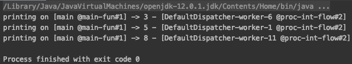
Hopefully that gives you the context to learn more
What About… ?
error handling
integration with XXX (RxJava, Akka, Kafka, etc.)
cross-language support (e.g., JLS)
etc etc
More Information
https://github.com/Kotlin/KEEP/blob/master/proposals/coroutines.md - a little dated, the definitive guide to the reasoning and implementation behind Coroutines
https://kotlinlang.org/docs/reference/coroutines/channels.html
https://proandroiddev.com/kotlin-coroutines-channels-csp-android-db441400965f
https://medium.com/@elizarov/cold-flows-hot-channels-d74769805f9
{kind=link}